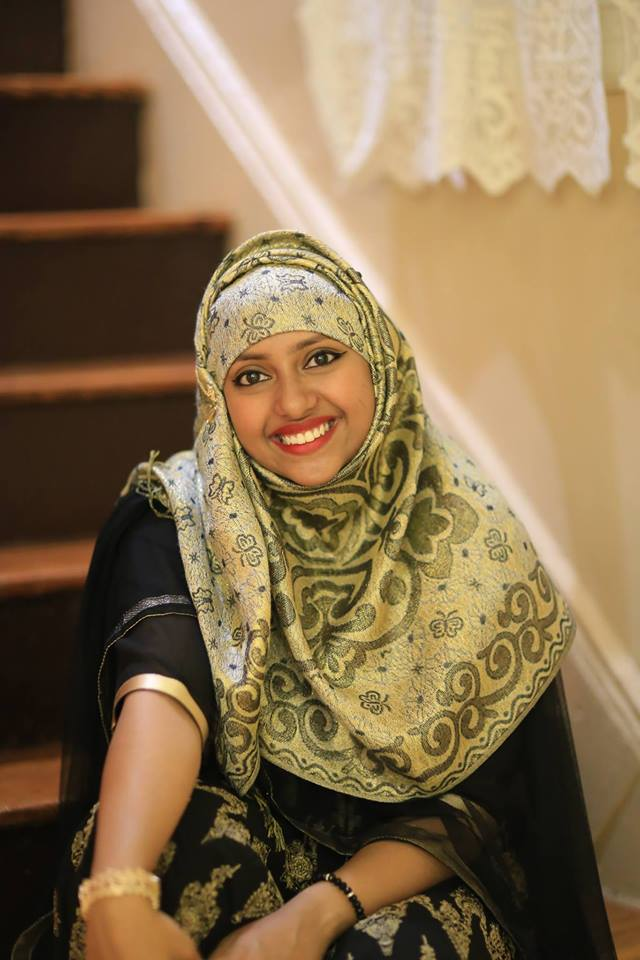

Afroza Akther

Reflection Page for Core4 Topics
I live in the Bronx and I'm 16 years old. I go to High School of American Studies at Lehman College, and I'm a rising senior. I'm the youngest of four siblings and I'm an aunt to three nieces and one nephew.
Likes
I like reading romance novels and Harry Potter. My favorite shows are Grey's Anatomy and Jane the Virgin. My favorite food is chicken, and I will eat it in any shape or form (as long as it's halal.)
Dislikes
I dislike mean people and cockcroaches, and I'm a bit scared of butterflies. I'm not particularly fond of peanut butter or liver.
Fun Fact
I collect water bottles because it's fun, but I almost always end up using the same one.